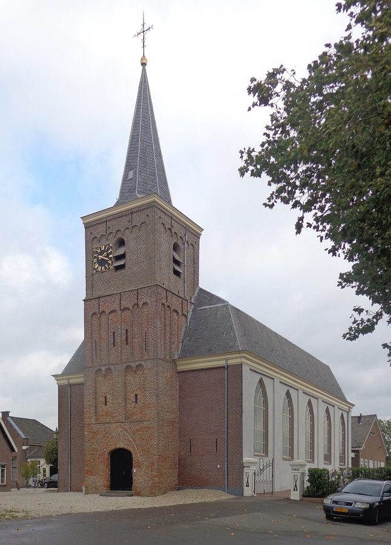

De familie Oosterom heette eerst Van Oostrum. Al minstens driehonderd jaar woont ze in hetzelfde
stukje Nederland: de polders langs de Lek, tussen Lopik en Bergambacht. Het waren boeren, en de namen Teunis en
Arie komen in elke generatie terug.
Lopikerkapel, met het kerkje waar de Van Oostrums werden gedoopt en trouwden. Foto: Jan Dijkstra,
Wikimedia Commons, CC BY-SA 4.0.
De oudste voorvader die we zeker kennen is Huijbert van Oostrum. Hij woonde in Lopikerkapel, een
klein dorp in de Lopikerwaard, ten zuiden van Utrecht. Daar staat een wit kerkje, de "kapel" die het dorp zijn
naam gaf. In dat kerkje is bijna de hele familie in de 18e eeuw gedoopt en getrouwd.
Huijbert trouwde twee keer. In maart 1748 trouwde hij met Ariaentje Boef uit Lopik. Vier weken later lieten ze
al een dochtertje dopen. Ariaentje stierf anderhalf jaar later, in december 1749. In 1751 trouwde Huijbert met
Willempje Jaarsveld, uit het buurdorp met dezelfde naam. Ze kregen minstens vijf kinderen. De jongste,
Teunis, werd op 5 december 1762 gedoopt. Huijbert leefde nog lang: hij werd in december 1792 begraven in de kerk van
Lopikerkapel, in een gehuurd graf.
Teunis trouwde in 1787 met Geertje Dekker uit Noordeloos, aan de overkant van de Lek. Ze kregen
minstens tien kinderen. Drie zoons noemden ze Arie. Dat gebeurde meestal als een kind met die naam was gestorven: de
eerste twee Aries leefden dus waarschijnlijk niet lang. De derde Arie, geboren in 1801, werd 80. In augustus 1830 stierven Geertje en Teunis kort na elkaar in Jaarsveld, met drie dagen ertussen.
In die jaren veranderde de naam. In de oudere kerkboeken staat Van Oostrum. Rond 1800 valt het
"van" weg, en vanaf 1807 schrijft de dominee Oosterom. Zo is de naam gebleven.
Drie generaties in Polsbroek

De kerk van Polsbroek. Foto: HenkvD,
Wikimedia Commons, CC BY-SA 4.0.
Arie Oosterom (1801–1881) trouwde in 1830 met Elisabeth Kooiman uit Willige Langerak. Het
paar ging in Polsbroek wonen, een lintdorp een paar kilometer verderop. Daar bleef de familie bijna
tachtig jaar.
Hun zoon Teunis (1847–1915) was boer in Polsbroek. Hij trouwde met Adriana Cornelia
Lekkerkerker uit Benschop en kreeg acht kinderen. Zijn zoon Pieter (1875–1959) trouwde in 1907 ook met een
Lekkerkerker: Willempje, dochter van Arie Lekkerkerker en Steventje de With. In mei 1908 werd in Polsbroek
hun eerste zoon geboren, weer een Arie.
Over de Lek: Bergambacht
Kort daarna verhuisden Pieter en Willempje naar Bergambacht, aan de andere kant van de Lek, in de
Krimpenerwaard. Vanaf 1909 werden daar hun kinderen geboren. Pieter was er boer ("bouwman") en werd 84 jaar.
Arie Oosterom (1908–1988) groeide op in Bergambacht. Hij trouwde met Johanna Jacoba de Jong
(1917–1994) en kreeg vijf kinderen. Zij en hun kinderen leven nog of zijn pas kort geleden overleden. Daarom
staan ze niet met naam op deze site.
Waar stopt de lijn? Huijbert van Oostrum noemde zich "Huijbert Janse", dus zijn vader heette Jan.
Waarschijnlijk was dat Jan Ariensz van Oostrum uit Lopikerkapel, maar dat is nog niet bewezen. Zie
Bronnen.